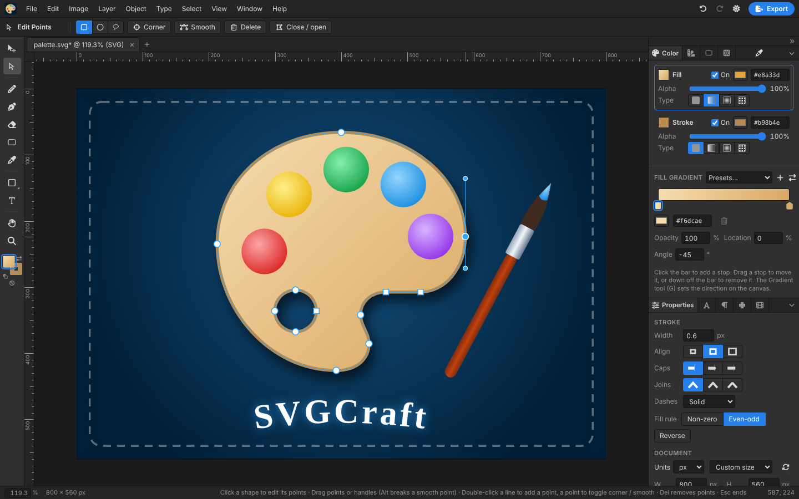
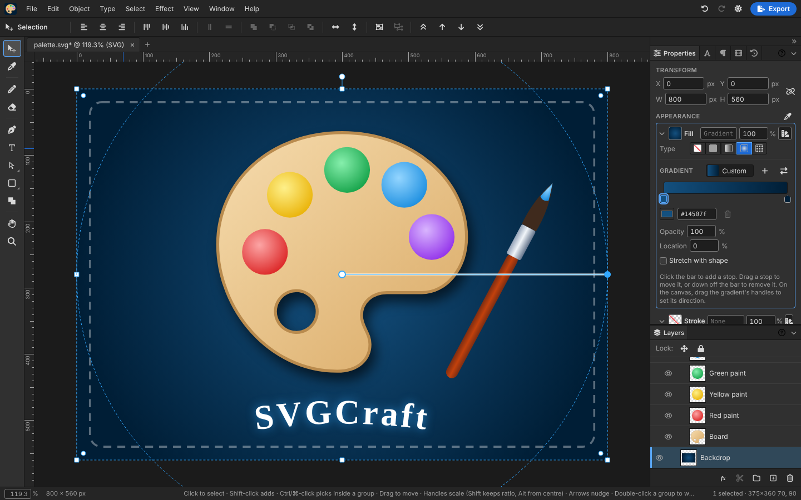
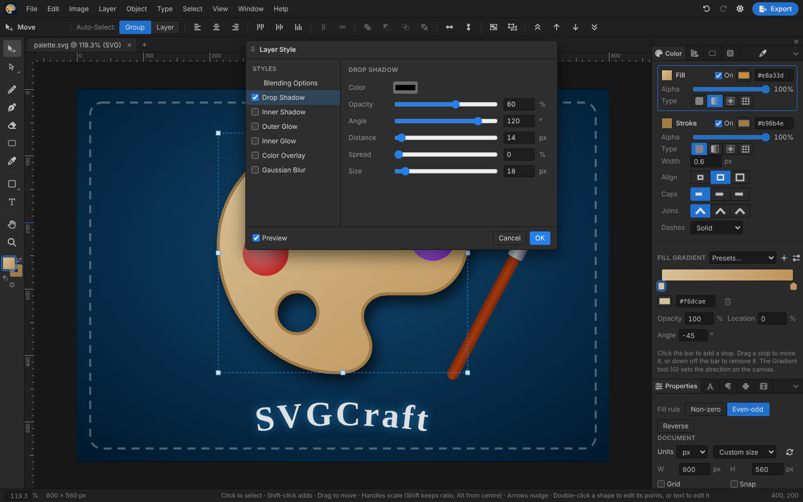
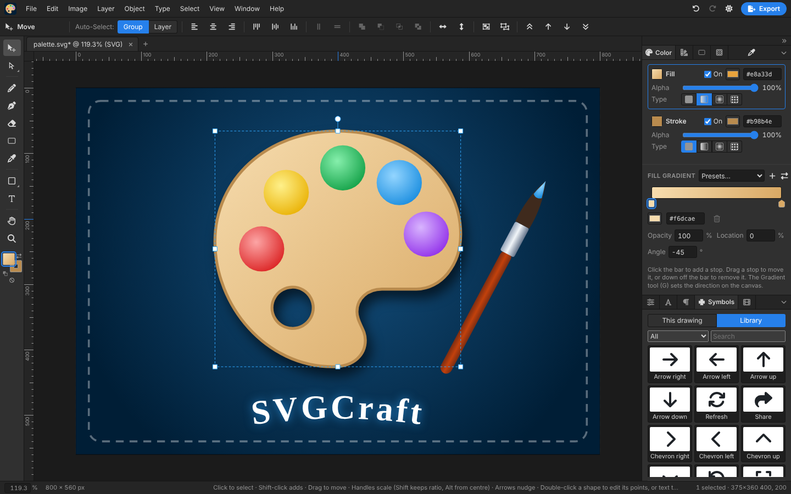
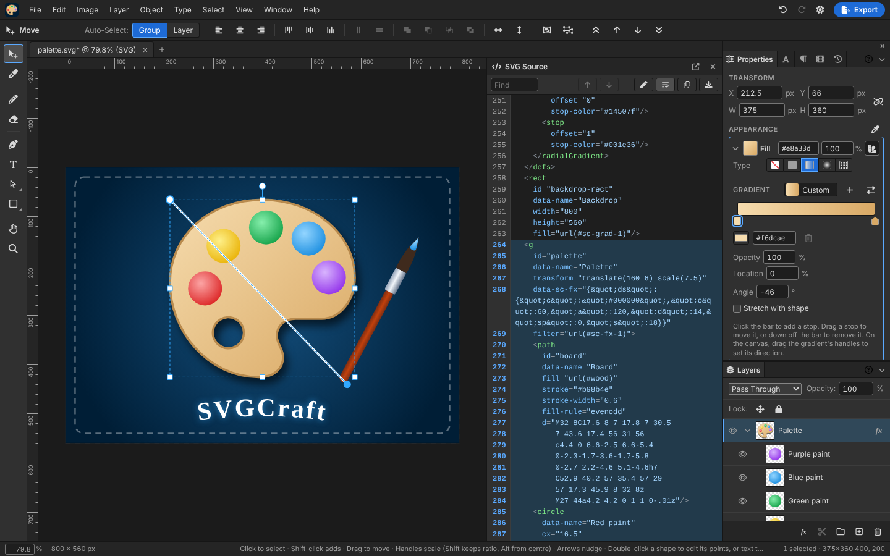
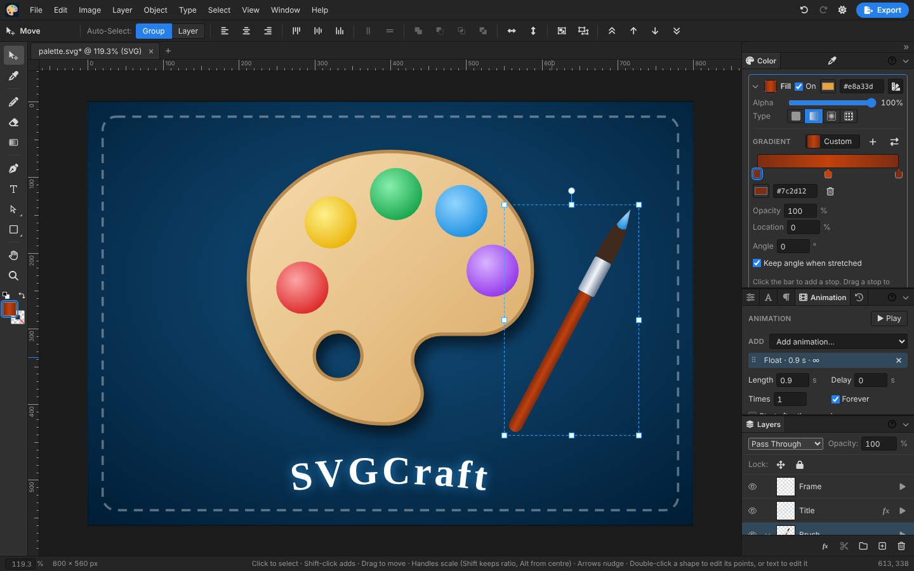
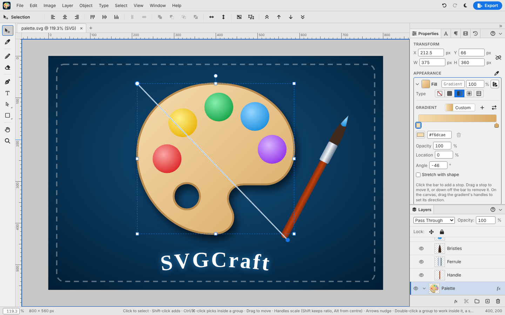

Why SVGCraft
Most SVG editors are either desktop suites or diagram tools. SVGCraft is a lightweight editor for illustrations, icons and UI art, with the controls and shortcuts of the tools designers already know.
Familiar
Photoshop's tools, menus, panels and shortcuts: Free Transform, Layer Style, blend modes, Pass Through groups and live corners.
Real SVG
Everything you make is plain SVG that other editors and browsers read. SVGCraft's own settings travel inside the file, so it opens again fully editable.
Private
It's four static files with no server. Open drawings and libraries are kept in your browser, not uploaded anywhere.
Light or dark
Follows your system theme, or pick Dark or Light from View → Theme. On a phone it becomes a viewer: play the animations, show and hide layers, try it on white or black, and share it.
Features
The highlights, with a screenshot of each. The full list follows.

Draw and edit paths
- Pen for corners and smooth curves, Pencil for freehand lines with smoothing.
- Photoshop's Shape tools: rectangles with live rounded corners, ellipses, triangles, polygons and stars, lines with arrowheads, and custom shapes from the Symbols library, dragged or typed to an exact size.
- Edit Points on any path or shape: drag points and handles, add, delete, switch corner and smooth; pick several with a rectangle, an oval or a freeform lasso.
- Eraser that deletes objects or cuts stroked lines.
- Combine Shapes: Unite, Subtract Front, Intersect and Exclude.

Colour, gradients and patterns
- Separate fill and stroke, each with its own colour and alpha.
- Linear and radial gradients with a stop editor and an on-canvas Gradient tool.
- Pattern fills, and Define Pattern to turn any selection into a tile.
- Swatches, Gradients and Patterns libraries kept in your browser. Export them in one zip with GIMP palette, CSS and SVG files for other apps, and import palettes and gradients from them. Duplicates are skipped, and name clashes ask before replacing anything.
- Eyedropper that copies a style or samples the exact on-screen colour.

Layers and Layer Style
- A Layers panel with groups as folders, drag to reorder, rename, show and hide.
- Layer Style: drop shadow, inner shadow, outer and inner glow, colour overlay and Gaussian blur, with a live preview.
- All 16 Photoshop blend modes, plus Pass Through for groups.
- Lock position or lock everything, per layer or per group.
- A Layer menu as in Photoshop, with Layer via Copy and Layer via Cut: copy or cut whole layers, a shape out of its group, or the segments between points you pick.
- Merge Down and Merge Visible, staying vector: alike shapes become one path, the rest one group.
- Group by Colour sorts a drawing into one group per colour, keeping how it looks.
- Clipping masks: clip layers to the shape or text on top of them.

Type and symbols
- Point and paragraph text, edited right on the canvas, with Character and Paragraph panels.
- Per-character styling, the whole Google Fonts catalogue (about 1,900 families) and your installed fonts.
- Text on a path and Create Outlines to turn text into shapes.
- Symbols: reusable artwork with instances that update together.
- A Symbols library of 80 built-in icons, plus your own, exported as an SVG sprite for the web.

Clean SVG in and out
- SVG Source as a split view beside the canvas: syntax-coloured (CSS too), highlighting the selected layer's markup, with find, copy and download.
- Open, import, drag and drop or paste SVG and images. Imports are sanitised.
- Image Trace turns a bitmap into shapes, one layer per colour, stacked so there are no gaps.
- Export SVG, a clean minified SVG for the web, or PNG at 1×, 2× and 4×.
- File Info for title, author, copyright and other metadata, stored the standard way.
- Effects, locks, blend modes and dashes all survive a save and reopen.

Animation
- Animate any layer or group from the Animation tab, with presets to pick from: fade, slide, pop and zoom in or out, spin, pulse, bounce, shake, float and blink, draw a line on or off, march its dashes, or cycle its colour.
- Set the length, delay, how many times or forever, direction, back and forth, and easing. Layers can have several animations at once.
- Chain one to start after the one above, and drag to reorder them.
- Preview it on the canvas with ▶ Play.
- Saved as standard SVG animation that plays in every current browser, with no script, and reopens editable.


A comfortable workspace
- Document tabs, each with its own undo history and view, restored when you come back.
- A
*on a tab when the drawing has unsaved changes. - New Document with presets for web, social, mobile and print, any units, orientation and a background colour.
- Zoom tool, rulers, guides, grid and snap, and a pixel grid with snap to pixel.
- Icon tools: New Icon templates for Material, Android, iOS, macOS and favicons, margins as guides, keylines, and a live preview at 16 to 128 px on light, dark or transparent backgrounds, masked the way iOS and Android crop app icons, and app icon export for the web, iOS, Android and macOS in one zip.
- Panels with Photoshop-style icon tabs: fold any group to its tabs, or collapse the whole column to a strip of icons that pop each panel out. A Window menu lists every panel, and Reset Workspace puts it all back.
- Menu items and buttons grey out until they can run on what's selected, and their shortcuts with them.
- Every dialog drags by its title bar. Close the last tab for a blank workspace.
- Tooltips on every tool, and dark and light themes.
Everything else
Transform and arrange
- Free Transform with exact position, size, angle and skew.
- Transform → Scale, Rotate, Skew, Flip, Rotate 90° / 180°.
- Transform Again, and Again with Copy for repeats.
- Align and distribute, to the selection or the artboard.
- Group, ungroup, z-order, duplicate, nudge.
Strokes
- Width, caps and joins.
- Align inside, centre or outside, as in Photoshop.
- Solid, dashed, dotted, long dash or custom dash patterns.
Selecting and cropping
- Select All, Deselect and Inverse.
- Marquee selection, auto-select by group or layer.
- Crop to Selection and Crop to Drawing, counting strokes and effects.
- Image Size scales the whole drawing; Canvas Size resizes the artboard around an anchor.
- Work in pixels, millimetres, centimetres, inches or points, with page presets (A4, US Letter…) saved at their real size for print and cutting.
Safe to experiment
- Undo and redo for every change.
- Drawings saved in your browser as you work.
- Works offline once you've opened it, and installs as an app on your computer or phone.
- Unsaved changes are flagged before a tab closes.
Keyboard shortcuts
On a Mac, use ⌘ where it says Ctrl. Browsers keep a few keys for themselves (such as Ctrl+T), so some Photoshop shortcuts use Alt instead.
| Keys | Action |
|---|---|
| V A | Move · Edit Points |
| P B E I | Pen · Pencil · Eraser · Eyedropper |
| U · Shift+U | Shape tool · next shape (rectangle, ellipse, triangle, polygon, line, custom) |
| T G H Z | Type · Gradient · Hand · Zoom |
| Space (hold) | Pan |
| D · X | Default fill and stroke · Swap them |
| [ ] | Stroke width down · up |
| Ctrl+Z · Ctrl+Shift+Z | Undo · Redo |
| Ctrl+C X V | Copy · Cut · Paste (as SVG) |
| Ctrl+J · Ctrl+A · Ctrl+D | Layer via Copy · Select All · Deselect |
| Alt+Shift+J | Layer via Cut |
| Ctrl+E · Ctrl+Shift+E | Merge Down · Merge Visible |
| Shift+F7 | Select Inverse |
| Alt+T · Alt+Shift+T | Free Transform · Transform Again |
| Ctrl+G · Ctrl+Shift+G | Group · Ungroup |
| Ctrl+Alt+G (+ Shift) | Make · Release Clipping Mask |
| Ctrl+Shift+O | Create Outlines |
| Ctrl+] Ctrl+[ · Ctrl+Shift+] Ctrl+Shift+[ | Forward · Backward · To Front · To Back |
| Arrows (Shift = 10 px) | Nudge |
| Del / Backspace | Delete |
| + − 0 1, or Ctrl + + − 0 | Zoom In · Zoom Out · Fit · 100% |
| Ctrl+R · Ctrl+; · Ctrl+' | Rulers · Guides · Grid |
| Ctrl+Alt+I · Ctrl+Alt+C | Image Size · Canvas Size |
| Tab · Shift+Tab | Hide all panels · Hide the right-hand panels |
| Ctrl+S · Ctrl+O | Save as SVG · Open |
| Ctrl+U | Show / hide the SVG source |
| Ctrl+Alt+P | Show / hide the icon preview |
| Alt+Shift+Ctrl+I | File Info |
| Alt+↑ · Alt+↓ | Move the animation up · down the list |